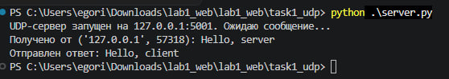
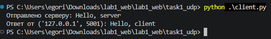
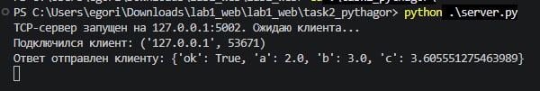
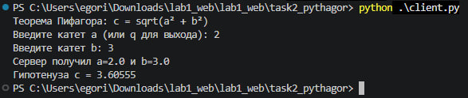
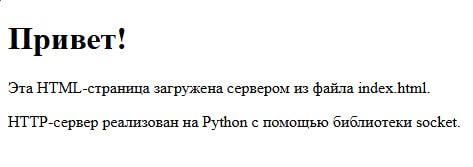
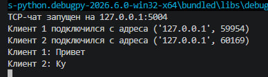
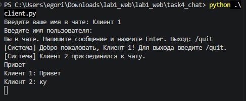
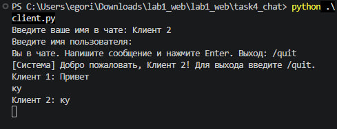
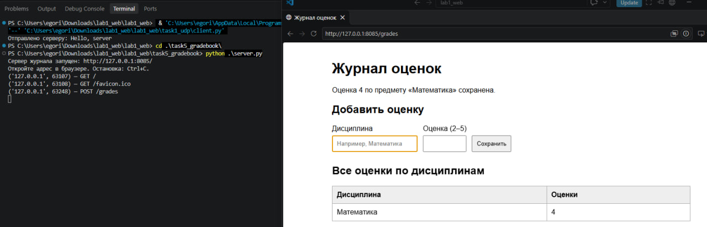

Лабораторная работа №1. Работа с сокетами
Выполнил: Кондилеев Егор Юрьевич\ Группа: К3339
Цель работы
Понять принципы межсокетного взаимодейсвтия в вебе. Научиться реализовывать базовую архитектуру клиент-сервер.
Задание 1. Обмен сообщениями по UDP
Реализованы UDP-клиент и UDP-сервер с использованием стандартной
библиотеки socket. Для создания сокетов используется семейство адресов
IPv4 (socket.AF_INET) и тип socket.SOCK_DGRAM, соответствующий
протоколу UDP.
Сервер привязывается к адресу 127.0.0.1:5001 с помощью bind() и
ожидает входящее сообщение методом recvfrom(). Клиент отправляет
строку Hello, server на этот адрес с помощью sendto(). Получив
сообщение, сервер выводит его в терминал и отправляет клиенту ответ
Hello, client.
Перед отправкой строки преобразуются в байты с помощью
encode("utf-8"), а принятые данные декодируются методом
decode("utf-8"). На клиенте установлен тайм-аут в 5 секунд
(settimeout(5)), чтобы программа не ожидала ответ бесконечно, если
сервер не запущен или ответ не пришёл.
Результат
Работа сервера:

Работа клиента:

Задание 2. Вычисление гипотенузы по TCP
Реализованы TCP-клиент и TCP-сервер для вычисления гипотенузы прямоугольного треугольника по двум катетам. Используется теорема Пифагора:
c = √(a² + b²),
где a и b --- длины катетов, c --- длина гипотенузы.
Сервер принимает подключения на адресе 127.0.0.1:5002. Для TCP
используются сокеты типа socket.SOCK_STREAM. Сервер ожидает
подключения методом listen(), принимает клиента через accept() и
обрабатывает запрос.
Клиент запрашивает у пользователя значения катетов a и b,
преобразует их в числа типа float и формирует JSON-объект. Запрос
отправляется серверу в UTF-8 с завершающим символом новой строки. Сервер
считывает строку до \n, разбирает JSON с помощью json.loads(),
извлекает значения катетов и вычисляет гипотенузу функцией
math.sqrt(a * a + b * b).
Перед вычислением сервер проверяет, что катеты не являются
отрицательными. При корректных данных клиент получает JSON-ответ с
результатом, а при ошибке --- сообщение с описанием проблемы. Для выхода
из клиента вместо первого катета можно ввести q.
Результат
Работа сервера:

Работа клиента:

Задание 3. Передача HTML-страницы по HTTP
Реализован минимальный HTTP-сервер на основе TCP-сокетов. Сервер
работает по адресу 127.0.0.1:8080, а в качестве клиента можно
использовать обычный браузер или дополнительный тестовый скрипт
client.py.
HTML-страница хранится в отдельном файле task3_http/index.html. После
получения запроса сервер анализирует первую строку HTTP-запроса. Для
запросов GET / и GET /index.html сервер считывает HTML-файл и
формирует ответ со статусом 200 OK. Для остальных адресов возвращается
ответ 404 Not Found.
HTTP-ответ состоит из строки статуса, заголовков и тела. В заголовке
Content-Type указывается тип содержимого text/html и кодировка
UTF-8. В Content-Length передаётся размер тела ответа в байтах. Между
заголовками и телом располагается пустая строка (\r\n\r\n). После
формирования ответа данные отправляются клиенту методом sendall().
Сервер работает в цикле и может последовательно обрабатывать несколько
запросов. Для повторного запуска сервера используется параметр
SO_REUSEADDR.
Результат

Задание 4. Многопользовательский TCP-чат
Реализован многопользовательский чат на TCP с использованием библиотеки
threading. Сервер принимает подключения по адресу 127.0.0.1:5004.
Один и тот же клиентский скрипт client.py можно запускать в нескольких
терминалах, чтобы подключить разных пользователей.
После подключения сервер запрашивает имя пользователя. Имя и
соответствующий сокет сохраняются в общем словаре clients. Для каждого
нового подключения создаётся отдельный поток с помощью
threading.Thread(), поэтому сервер может одновременно обслуживать
нескольких участников.
Полученные от клиентов сообщения сервер рассылает остальным подключённым
пользователям. Перед отправкой к сообщению добавляется имя автора. Для
безопасной работы с общим словарём используется блокировка
threading.Lock(). При отключении клиента его соединение удаляется из
словаря, а остальным участникам отправляется системное уведомление.
На стороне клиента отдельный поток отвечает за приём и вывод сообщений,
а основной поток обрабатывает ввод пользователя. Для выхода из чата
используется команда /quit. Пустые сообщения не рассылаются, а длина
одного сообщения ограничивается 1000 символами.
Результат
Сервер чата:

Первый клиент:

Второй клиент:

Задание 5. Веб-сервер с обработкой GET и POST
Реализован HTTP-сервер журнала оценок с использованием библиотеки
socket. Сервер работает по адресу 127.0.0.1:8085. Он поддерживает
методы GET и POST, а также предоставляет HTML-форму для добавления
оценок по дисциплинам.
При GET-запросе к / или /grades сервер отображает страницу журнала и
форму добавления оценки. При POST-запросе к /grades сервер получает
название дисциплины и оценку. Поддерживается отправка данных как из
HTML-формы, так и в формате JSON.
Для чтения HTTP-запроса реализована функция read_request(): она
считывает заголовки до последовательности \r\n\r\n, определяет длину
тела по заголовку Content-Length и получает всё тело запроса. Данные
HTML-формы разбираются с помощью parse_qs(), JSON --- с помощью
json.loads().
Оценки хранятся в словаре gradebook: ключом является название
дисциплины, а значением --- список оценок. При добавлении оценки
используется setdefault(subject, []).append(grade), поэтому новые
оценки по уже существующему предмету добавляются в его список.
Сервер проверяет наличие названия дисциплины и корректность оценки:
допускаются только целые значения от 2 до 5. Для безопасного отображения
пользовательского текста в HTML применяется escape(). В случае
корректного запроса сервер возвращает страницу со статусом 200 OK, при
некорректных данных --- 400 Bad Request. Для неподдерживаемых методов
предусмотрен ответ 405 Method Not Allowed, для неизвестных адресов ---
404 Not Found.
Данные журнала хранятся в оперативной памяти и очищаются после остановки сервера.
Результат

Вывод
В ходе лабораторной работы были разработаны клиентские и серверные
приложения на Python с использованием библиотеки socket. Реализован
обмен сообщениями по UDP, вычисление гипотенузы по TCP с применением
теоремы Пифагора, передача HTML-страницы по HTTP, многопользовательский
TCP-чат и веб-сервер журнала оценок с обработкой GET- и POST-запросов.
В результате работы изучены различия между UDP и TCP, принципы установления TCP-соединения, передача и обработка данных в текстовом и JSON-форматах, структура HTTP-сообщений и применение потоков для одновременного обслуживания нескольких клиентов.